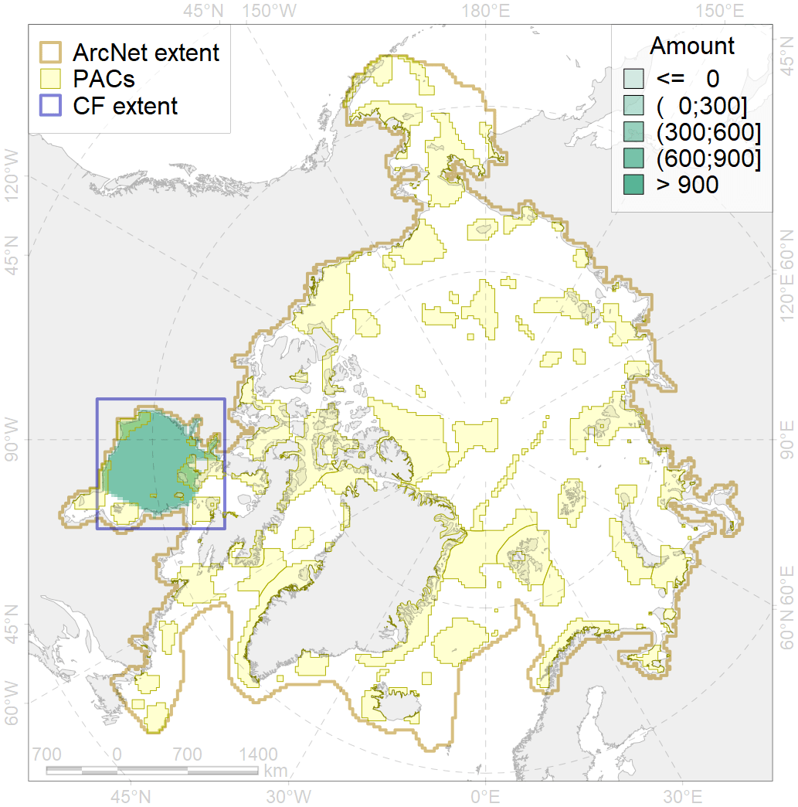
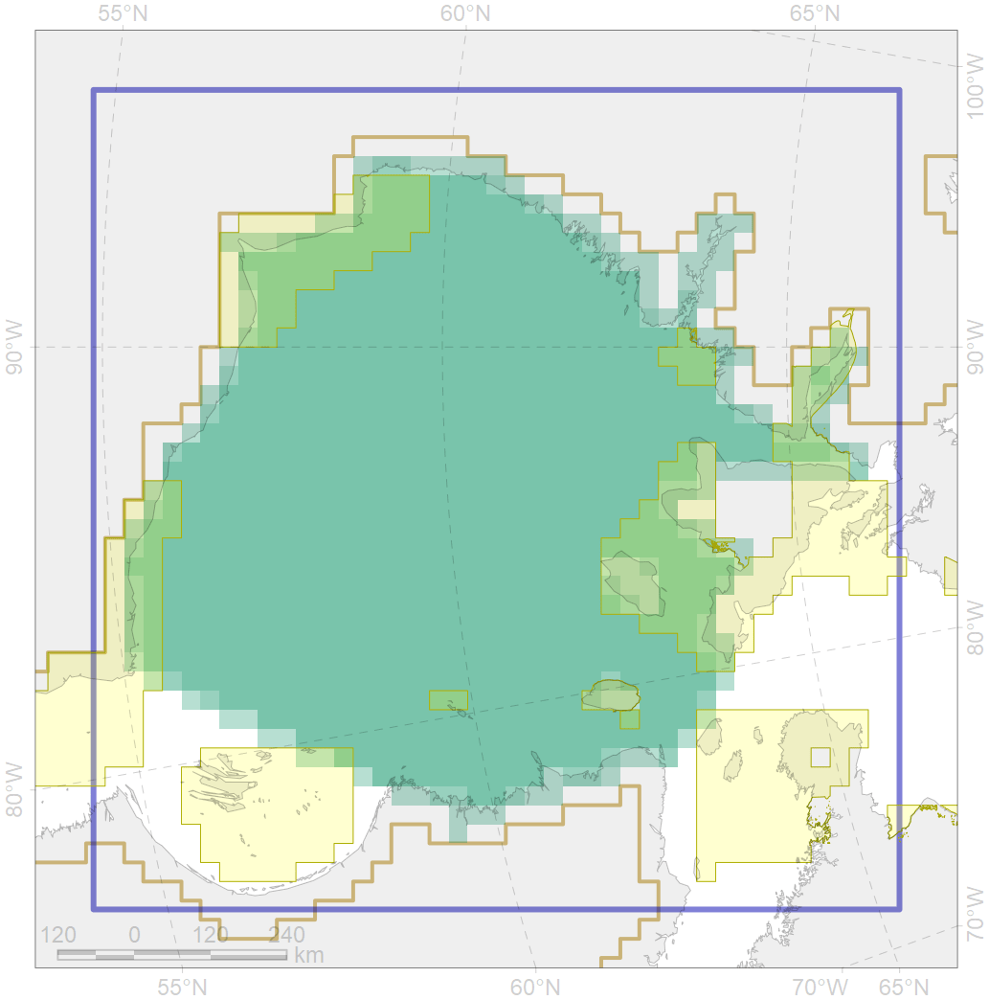

7028

| CF ID | 7028 |
| CF Name | Hudson Bay enclave |
| Time Period | 1900-2010 |
| Source(s) | Spiridonov et al., in prep. |
| Seasonality | January - December |
| Depth Horizon | Sea floor |
| Methodology | Boundaries derived from biogeographic regionalization scheme, which is in preparation for publication |
| Author Name | V. Spiridonov |
| Notes | |
| Conservation Target Set in the Scenario | 0.09227197 |
| Conservation Target Achieved in the Scenario | 0.147 (Scenario: 158.8%) |
| PAC ID | Proportion in the PAC | Contribution to ArcNet Target Achievement | PAC’s Contribution to the Achieved Target |
|---|---|---|---|
| 67 | 5.6% | 53.2% | 33.5% |
| 68 | 0.7% | 5.7% | 3.6% |
| 69 | 4.6% | 43.7% | 27.5% |
| 70 | 1.9% | 18.8% | 11.8% |
| 71 | 0.1% | 0.9% | 0.6% |
| 72 | 1.0% | 5.0% | 3.2% |
| 73 | 0.0% | 0.1% | 0.0% |
| inner | 14.0% | 127.4% | 80.2% |
| outer | 86.0% | 31.4% | 19.8% |